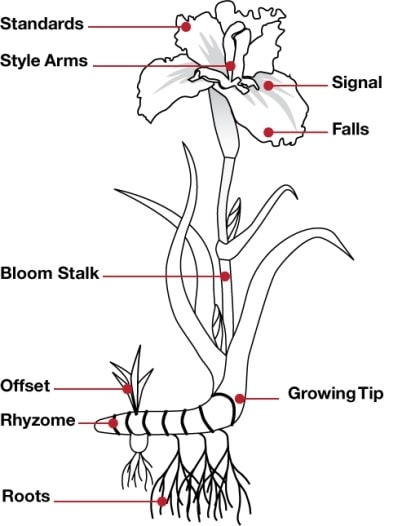

R Projects
Linear Regression in R
1 November, 2022
 In this project, I explored continuous and discrete numerical data in R Studio Cloud. I hypothesised that age would be positively correlated with lung capacity as participants were young. I tested this hypothesis using R and rejected the null hypothesis based on statistical test results. My code and an explanation of my process is available on GitHub.
In this project, I explored continuous and discrete numerical data in R Studio Cloud. I hypothesised that age would be positively correlated with lung capacity as participants were young. I tested this hypothesis using R and rejected the null hypothesis based on statistical test results. My code and an explanation of my process is available on GitHub.
Data Cleaning in R Using Iris Data
5 November, 2022
In this project I used R to clean dirty data from a dataset on iris flower specimens. I used janitor and dplyr packages to make the variable names consistent, remove empty rows and columns, remove duplicate data, remove duplicate data in respect to a specific column, and standardise capitalisation. The work is available in an R Markdown file.
- Design: HTML5 UP